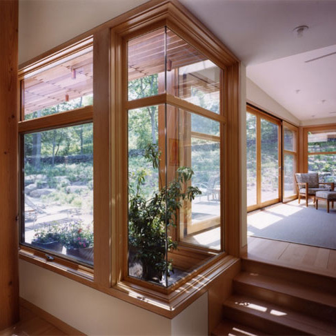
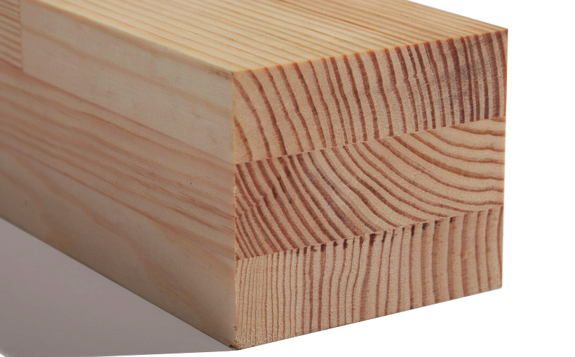

Натуральность и красота!
Деревянные окна — это воплощение домашнего тепла и уюта.
Эстетические характеристики изделий из древесины остаются вне конкуренции,
несмотря на довольно удачные попытки копировать ее фактуру.
Конструкция евроокна:
- Рама и створка оконного блока изготовлены из трехслойного бруса сосны, дуба или миранти размером 68 или 78х80.
Оконный блок окрашен по схеме: антисептик, грунтовка, лак. - Уплотнители Schlegel защищают от воздействия неблагоприятных факторов внешней среды и обеспечивают дополнительную звуко- и теплоизоляцию.
- Паз под внутренний подоконник.
- Паз под внешний отлив.
- Алюминиевый водоотливной профиль защищает от попадания влаги и разрушения створки.
- Штапик с теневым пазом, что скрывает линию примыкания к створке или раме.
- Стеклопакет одно или двухкамерный энергосберегающий на ваш выбор.
- С внутренней и внешней стороны, в местах стыка стеклопакета с деревом проводится специальная обработка полупрозрачными силиконовыми герметиками, которые обеспечивают герметизацию стеклопакета в оконном блоке.
- Фурнитура немецкого производства.
Преимущества деревянных евроокон
Экологическая чистота и безопасность
С экологической точки зрения преимущества древесины, по сравнению с аналогичными материалами, очевидны, ведь дepeвo — натуральный экологически чистый материал. Использование деревянных оконных конструкций снижает концентрацию углекислого газа в помещении и позволяет создать атмосферу теплоты и уюта. Окна из природных материалов являются максимально полезными и создают ощущение единения с природой. Деревянные окна проходят многоступенчатую обработку лакокрасочными материалами на водной основе последнего поколения производства Германии и Швеции. Благодаря своим уникальным свойствам паропроницаемости и эластичности современные лакокрасочные материалы позволяют сохранять первозданную красоту природы деревянных окон на долгие годы эксплуатации.
Теплоизоляция

Древесина обладает низкой теплопроводностью, что позволяет повысить устойчивость окон к резкому перепаду температуры и снизить коэффициент температурного линейного расширения. В совокупности со стеклопакетом и качественными уплотнителями, деревянные окна превосходят по своим характеристикам любые пластмассовые или алюминиевые окна. Дерево, благодаря своим уникальным свойствам, является одним из лучших теплоизоляционных материалов. Низкий уровень теплопроводности исключает возможность возникновения термомост в оконных рамах. Прикоснуться к оконной раме из древесины приятно даже тогда, когда на улице минусовая температура.
Чтобы исключить любые деформационные процессы при изменении климатического сезона необходимо использовать клееную конструкцию, как правило, трехслойную, специального радиального распила (угол наклона годовых колец более 45 °). Принципиальным моментом является процесс сушки, так называемый мягкий режим, когда дерево проходит процесс сушки в специальных камерах не менее 7 суток. Контроль за соблюдением всех вышеуказанных требований делает оконный деревянный брус уникальным строительным материалом, аналог которому трудно представить.
Разнообразие форм и цветов

Деревянные окна могут быть различной формы и любого цвета. При необходимости мы также можем подобрать оттенок окраски окна, к примеру, под цвет спальни или дверей. Благородство натурального материала, отсюда и богатое многообразие дизайнерских решений при дорогих обработках в сочетании с другими элементами интерьера (двери, паркет, кабинет, мебель и т.д.).
Шумоизоляция
Деревянные окна имеют повышенную шумоизоляцию. В современных конструкциях используется двухкамерный стеклопакет, качественные уплотнители, повышающие уровень шумоизоляции в несколько раз. Показатели звукоизоляции и теплообмена у деревянных окнах ощутимо выше, чем в других материалах той же толщины, а вот коэффициент температурного расширения ниже. И это еще один аргумент в пользу дерева, поскольку низкий коэффициент указывает на устойчивость к перепадам температур и меньшем изменение размеров вследствие сжатия и расширения.
Воздухообмен
Древесина имеет пocтоянный обмен влаги и воздуха нормализуя количество кислорода в помещении. Рамы из дерева "дышат", помогая поддерживать нужный уровень влажности. Воздухообмен проходит через микропоры "живой" структуры древесины. Поэтому и при закрытых окнах происходит постепенная вентиляция помещения позволяющая поддерживать свежесть воздуха и предотвращать появление конденсата. Деревянное окно за 24 часа пропускает через свои поры примерно 2,5 куб. м. воздуха. Для увеличения срока эксплуатации древесины на изделия наносят специальные покрытия и лаки. При этом, лаки и специальные растворы не мешают раме "дышать" и тем самым регулировать, в зависимости от погодных условий, влажность воздуха.
Долговечность
Деревянные окна, благодаря современной конструкции и качественной обработке нашими специалистами, долговечны в эксплуатации. Окна, обработанные специальными красками на водной основе, сохраняют свои оттенки даже под воздействием прямых солнечных лучей. Окна из трехслойного клееного бруса имеют стабильные размеры и расчетный срок службы более 45 лет. Современные конструкции, качественная обработка гарантируют надежность и долговечность деревянных окон. Ни один другой материал не может сравниться долговечностью с деревом. Вспомните, сколько десятилетий стояли деревянные окна в наших домах. Ввиду своей натуральности, древесина прекрасно приспособлена к нашим климатическим условиям. Они выдерживают перепад температур от -50 до + 50 ° С. На сегодняшний день успешно решаются проблемы устойчивости красок. Специально разработанные для окон системы окраски с лаками на базе водных растворителей, обладают повышенной адгезией с древесиной, долгое время остаются эластичными, пропускают водяной пар и тем самым обеспечивают стойкость покрытия и сохранение цвета даже под воздействием ультрафиолетовых лучей.
Престиж
Деревянные окна имеют не только отличные технико-эксплуатационные характеристики, но и прекрасные эстетические свойства. Благодаря современным деревянным окнам ваш дом приобретет неповторимый характер и особую атмосферу уюта и комфорта. Купить деревянные окна может позволить себе далеко не каждый. Такие окна - это показатель хорошего вкуса и стабильного дохода!
Уют в доме
Древесина — это один из наиболее благоприятных для человека материалов. В сочетании с современной фурнитурой и стеклопакетом, который нужно разбирать и мыть внутри — деревянное окно создает ни с чем не сравнимый микроклимат в доме (древесина, в отличие от других материалов, является дышащим материалом).
Защита
Благодаря надежной фурнитуре МАСО (Австрия) и широкому выбору заполнений деревянные окна могут защищать жилье от проникновения нежелательных гостей, за счет трех четвертей, которые не дают возможности установить между створкой и рамой специальных предметов для взлома фурнитуры. Противовзломная фурнитура является гарантом защиты оконной системы.
Также необходимо обратить внимание на прочность стеклопакета. В таких случаях применяется стекло, соединенное между собой и усиленное полимерным материалом. Броне пленки так же способны защитить стеклопакет с внешней стороны. Защитная пленка производится по стандартам, и имеет один или несколько степеней защиты. Например, пленка с индексом А1 толщиной всего 0,3 мм, способна выдержать удар топора. Таким образом, используя современные средства защиты, вы сможете максимально обезопасить себя и свое имущество от незваных гостей.
Экономия
Наши деревянные окна позволяют экономить до 30% тепловой энергии за счет снижения потерь тепла по сравнению с обычными деревянными окнами. Однажды потратившись на качественные окна, они прослужат Вам долгое время и принесут ни с чем не сравнимую радость в процессе эксплуатации.
Прочность
Прочность и неизменность геометрических размеров окна из ПВХ обеспечивают металлический профиль внутри конструкции и пластик снаружи. Если производитель сэкономит хотя бы на одном из этих материалов, то это приведет к неприятным последствиям: менять придется все окно. Дерево же подделать невозможно — качество изделий видно сразу невооруженным глазом. Деревянные окна изготавливают из трехслойного клееного бруса сечением 68 × 80 мм и 78 × 80 мм Именно клееный брус гарантирует устойчивость всей конструкции к погодным условиям. Он имеет более высокую прочность и долговечность по сравнению с обычным брусом того же сечения из массива.
Ремонтопригодность
Ремонтопригодность позволяет устранять видимые царапины на поверхности. Отремонтировать внешние дефекты на пластиковом окне практически невозможно, все повреждения на нем неисправимы. Кроме того, из-за своей электростатичность, ПВХ притягивает пыль, что неизбежно отражается на внешнем виде окна.